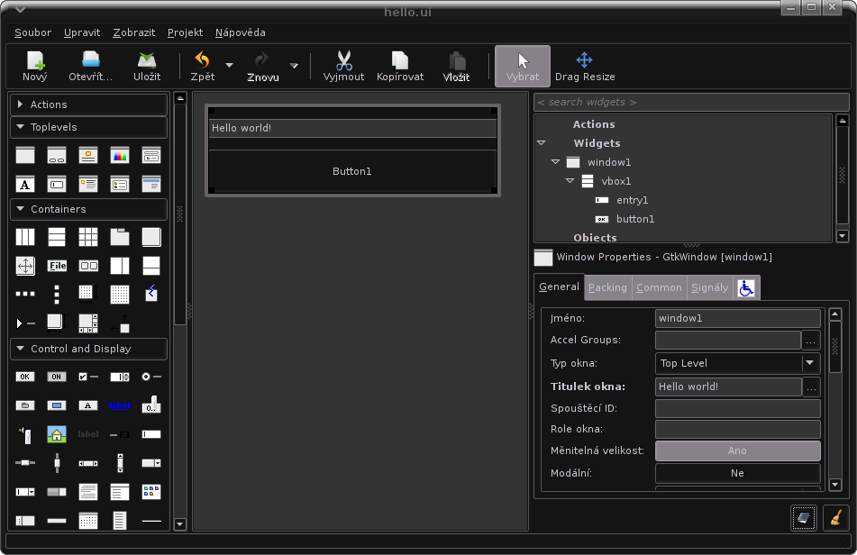

Dnes si ukážeme, jak pomocí knihovny GTK+ udělat podobnou “hello world” aplikaci, jako vidíte na obrázku. Bude složená z okna, textového vstupu a tlačítka. Při stisku tlačítka se zadaný text nastaví jako titulek tlačítka a navíc vypíše do konzole. Tuto aplikaci bude možné spouštět jak na Windows, tak na GNU/Linuxu, na BSD a dokonce na MacOS X. A aby toho nebylo málo, stejnou aplikaci napíši hned v několika jazycích. Cílem tohoto souhrnu je ukázat, jak snadné je vyvíjet multiplatformní aplikace pomocí open-source nástrojů.
První, co musíme udělat je navrhnout (naklikat) grafické rozhraní naší aplikace. K použijeme program Glade 3, který je principiálně dost podobný všem ostatním gui builderům, jako QT Designer, nebo Microsoft Visual Studio. Tento hotový design potom můžeme snadno použít v celé řadě programovacích jazyků.
Na obrázku níže vidíte, co je naším cílem:

Glade a vlastně i ostatní potřebné knihovny se dají stáhnout na adrese http://ftp.gnome.org/pub/GNOME/binaries/win32/, čtěte ale dále, protože možná pro vás bude výhodnější si stáhnout GTK+, Glade a další podpůrné knihovny jako jeden bundle i s vývojovým prostředím, nebo interpreterem vašeho oblíbeného jazyka.
Postup je také jednoduchý:
- vytvoříme nový projekt (použijeme formát GtkBuilder – ne LibGlade)
- na panelu vlevo pod záložkou “toplevels” poklikáme na “Window”, tím vytvoříme nové okno
- pod záložkou “containers” klikneme na “Vertical Box” a následně klikneme do vytvořeného okna, v dialogu změníme počet částí na “2″. okno by se mělo rozdělit na dvě části
- pod záložkou “Control and Display” klikneme na “Text Entry” a pak do horní části našeho okna, tím se umístí widget na zadávání textu
- stejným způsobem umístíme do dolní části widget “Button” ze stejné kategorie
Vsuvka: Pokud jde o ony “kontainery”, kam patří i “Vertical Box”, je třeba vysvětlit, co to znamená. Kontainer je widget, do kterého můžeme vkládat další widgety (třeba opět kontainery). Trik je v tom, že každý kontainer se jinak chová při resizování (změně velikosti) okna (nebo nadřazeného kontaineru). Pokud použijeme kontainer “Fixed”, tak můžeme přesně určit, kde který widget bude, ale při zvětšování a zmenšování okna to bude asi vypadat dost neprakticky a rozhodně ne elegantně. Proto máme třeba námi použitý “Vertical Box”, který prostor okna spravedlivě rozdělí mezi N widgetů a přizpůsobuje jejich velikost při každé změně. Pro složitější projekty je ale většinou třeba kombinovat různé druhy kontainerů.
Dále musíme přiřadit handlery signálů (jména funkcí, které se budou volat při dané akci):
- na panelu vpravo se nalézá strom widgetů, my vybereme okno “window1″
- v dolní části panelu přejdeme na záložku signály a najdeme signál “destroy” (ve třídě GtkObject), klikneme vedle něj do sloupce “handler” a z nabídky vybereme handler “on_window1_destroy” (asi nemá smysl vymýšlet si vlastní jména handlerů).
- stejným způsobem vybereme widget “button1″ a ke GtkButton signálu “clicked” opět z nabídky vybereme handler “on_button1_clicked”, tím jsme s návrhem hotovi
- pokud si nechcete s designem aplikace už nějak více hrát, můžete uložit svůj výtvor například do souboru “hello.ui”.
- Důležité je, že uložíte soubor ve formátu GtkBuilder a s příponou .ui (ta je kvůli Glade).
Nyní máme hotový XML soubor s popisem našeho rozhraní, který je možné buď externě načítat z našeho programu, což je výhodné, protože můžeme kdykoli upravit vzhled programu bez zásahu do kódu (a případné rekompilace), nebo ho nějakým způsobem umístit jako řetězec přímo do kódu našeho programu, což má zase jiné výhody (např. kompaktnost).
Backend k našemu hello.ui jsem napsal hned v několika jazycích, které ovládám, abych ukázal výhody použití GTKBuilderu a přiblížil ho co nejširší programátorské veřejnosti. Je nutné vědět, že GTKBuilder nebyl součástí knihovny GTK+ odjakživa. Dříve se pomocí glade generovaly soubory s příponou .glade a v kódu se načítali pomocí knihovny LibGlade, nebo byla možnost pomocí Glade přímo vygenerovat kód v jazyce C, což bylo ve verzi 3 taktéž zrušeno – paradoxně kvůli nedostatečnému výkonu tohoto kódu. Nyní existuje tzv. GTKBuilder, což je funkce (nebo spíše třída) umožňující načíst GUI ze souboru nebo z řetězce.
Ještě nejsou hotovy příklady ve všech jazycích, takže mohu zatím akorát slíbit, že je časem dopíši.
Teď je třeba popsat, jak funguje kód následujících příkladů. Nebudu rozebírat každý zvlášť, protože všechny dělají vesměs to samé (i když často pomocí dost odlišné logiky). Jen stručně shrnu, základní rysy kódu, který využívá GTKBuilder.
Tady je seznam akcí, které každý z programů musí vykonat:
- načte knihovnu GTK+ (případně moduly s interfacem k ní)
- definuje funkce/metody sloužící jako handlery signálů jednotlivých widgetů (viz. níže)
- Inicializuje GTK pomocí volání gtk_init
- vytvoří instanci GTKBuilderu
- pomocí gtk_builder_add_from_file nebo gtk_builder_add_from_string načte GUI vytvořené v Glade
- pomocí gtk_builder_connect_signals prováže handlery signálů s funkcemi nebo metodami v kódu (jména funkcí jsme již přiřazovali v Glade)
- pomocí gtk_builder_get_object získá reference na jednotlivé widgety (abychom s nimi mohli pracovat)
- v případě, že hlavní okno nemělo už z glade nastaveno visible=true (jako v našem případě), nastaví to
- pokud není programátor líný, tak uvolní GTKBuilder z paměti, protože jsou už všechny widgety načteny
- spustí hlavní cyklus GTK (gtk_main), který neustále hlídá, jestli nebylo stisknuto nějaké tlačítko, atp. Tento cyklus pokračuje donekonečna, dokud není z nějakého důvodu ukončen.
- zkončí
Dále tu máme handlery signálů, které musí program implementovat, jinak connect_signals() zkončí s chybou. V našem případě jsou pouze dva:
- on_window1_destroy: voláním gtk_main_quit ukončí hlavní cyklus GTK a tím se program ukončí (protože hned za cyklem je příkaz exit)
- on_button1_clicked: získá text zadaný do entry1, nastaví ho jako label widgetu button1 a navíc ho vypíše ho do konzole.
To je vše, co náš program dělá a nyní se již pojďme podívat na konkrétní kódy v jednotlivých jazycích.
Pokud jde o C, je situace trochu jiná než v ostatních jazycích (i když o něco lepší než v Assembleru). Knihovna GTK je napsaná v C, takže s kompatibilitou nebo rychlostí by problém být neměl, největší obtíží je asi kompilace (resp. dodání správných přepínačů kompilátoru). Na GNU/Linuxu většinou stačí mít dostatečnou verzi příslušné knihovny a potřebné hlavičkové soubory, potom lze celou aplikaci hezky zkompilovat pomocí příkazu, který jsem si poznamenal do zdrojáku.
V případě Windows jsou požadavky víceméně stejné, ale pokud nechcete používat CygWin bude nejtěžší do systému správně nainstalovat všechny knihovny. Moje znalosti jsou v tomto směru omezené, protože Windows nepoužívám a přenositelnost svých aplikací zkouším jen občas ve VirtualBoxu. Vím ale, že se mi podařilo můj program zkompilovat pomocí vývojového prostředí Code::Blocks (nástupce Dev-Cpp), které umožňuje při startu vytvořit GTK+ Projekt, stejně je ale potřeba nainstalovat všechny knihovny na své místo a sdělit kompilátoru jejich umístění. V té době ale tuším ještě nebyly k dispozici windowsí binárky Glade a celé se to muselo takhle bastlit, teď tuším by to šlo nějak přehledněji stáhnout a nainstalovat z repozitářů Gnome. Každopádně se mi to podařilo. Tuším ale, že jsem musel kód psaný na Linuxu pro Windows drobně upravit (tuším přidat makro G_MODULE_EXPORT před každou funkci, která je handlerem signálu), potom už se dal program zkompilovat jak na Windows, tak na Linuxu.
/* GTK Hello world! by Harvie 2oo9
*
* Compile this with:
* gcc -o hello hello.c $(pkg-config --cflags --libs gtk+-2.0) -export-dynamic
* or
* gcc -Wall -g -o hello hello.c `pkg-config --cflags --libs gtk+-2.0` -export-dynamic
*/
#include <stdio.h>
#include <gtk/gtk.h>
GtkBuilder *builder;
GtkWidget *window1, *button1, *entry1;
void on_window1_destroy (GtkObject *object, gpointer user_data)
{
gtk_main_quit();
}
void on_button1_clicked() {
gtk_button_set_label(button1, gtk_entry_get_text(entry1));
puts(gtk_entry_get_text(entry1));
}
int main (int argc, char *argv[])
{
gtk_init(&argc, &argv);
builder = gtk_builder_new();
gtk_builder_add_from_file(builder, "hello.ui", NULL);
window1 = GTK_WIDGET (gtk_builder_get_object (builder, "window1"));
button1 = GTK_WIDGET (gtk_builder_get_object (builder, "button1"));
entry1 = GTK_WIDGET (gtk_builder_get_object (builder, "entry1"));
gtk_builder_connect_signals(builder, NULL);
g_object_unref(G_OBJECT (builder));
gtk_widget_show(window1);
gtk_main();
return 0;
}
Musím se přiznat, že Perl se poslední dobou stává mým favoritem a je favoritem i mezi jazyky, které bych si vybral na tvorbu přenositelných okeních aplikací používajících GTK. Perl sice nemusí být tak rychlý jako C, ale je velmi pohodlný a kód je možné přenášet mezi různými systémy bez rekompilace. Teoreticky můžu mít jeden soubor s příponou .pl, který bude v sobě mít zakomponované i rozhraní z glade a který pustím prakticky všude.
Pro více informací bych doporučil web http://gtk2-perl.sourceforge.net/.
A pokud jde o instalaci na Windows, tak není o moc složitější, než pomocí některého z Linuxových balíčkovacích systémů. Všechno co potřebujete (a mnohem víc) dokáže stáhnout a nainstalovat program CamelBox. Jediný problém, který mi nastal při instalaci CamelBoxu bylo to, že jsem již předtím nainstaloval starší verzi Glib (kvůli kompilaci GTK aplikace v C, ale myslím, že to potká i například uživatele GIMPu nebo InkScapu). Při pokusu o spuštění programu na mě tedy vyběhla jen konzolová hláška “*** This build of Glib was compiled with glib 2.20.0, but is currently running with 2.16.3, which is too old. We’ll continue, but expect problems!” následovaná popupem a pádem programu. Na stránkách CamelBoxu mi poradili, abych odstranil starou knihovnu z cesty (proměnná prostředí %PATH%), já ale knihovnu pro jistotu rovnou odinstaloval a potom už vše fungovalo jak má. Jen poznamenám, že kvůli inkompetenci Microsoftích programátorů musí mít v sobě každá aplikace zakompilované nastavení, jestli má ukazovat konzoli, nebo ne. Z toho vyplívá, že v adresáři c:/camelbox/bin/ naleznete kromě souboru perl.exe také soubor wperl.exe, který okno konzole nezobrazuje a tedy je pro většinu GTK+ aplikací nejvhodnější. Pro spuštění programu stačí na skript kliknout pravým tlačítkem a přes možnost “Otevřít v programu” nastavit, aby se všechny soubory s příponou .pl spouštěly pomocí zmíněného programu perl.exe nebo wperl.exe.
#!/usr/bin/env perl
#GTK Hello world! by Harvie 2oo9
use strict;
use warnings;
use utf8;
use Gtk2 qw(-init);
my $builder = Gtk2::Builder->new();
$builder->add_from_file('hello.ui');
my %widgets;
foreach my $widget qw(window1 button1 entry1)
{
$widgets{$widget}=$builder->get_object($widget);
}
$builder->connect_signals( undef );
$builder = undef;
$widgets{'window1'}->show();
Gtk2->main();
exit;
sub on_window1_destroy
{
Gtk2->main_quit();
}
sub on_button1_clicked
{
$widgets{'button1'}->set_label($widgets{'entry1'}->get_text());
print $widgets{'entry1'}->get_text()."\n";
}
…bude doplněno…
Python může být také zajímavý pro některé účely, osobně ale nemám rád jeho syntaxi, takže ho moc nepoužívám. Pro více informací o PyGTK se podívejte na http://www.pygtk.org/, je tam návod na instalaci na Windows i na Linux, ale na Linuxu ho pravděpodobně už nainstalovaný máte, nebo je to otázka pár kliknutí myší v oblíbeném správci balíčků.
#!/usr/bin/env python
#GTK Hello world! by Harvie 2oo9
import gtk
class Hello:
def on_window1_destroy(self, widget, data=None):
gtk.main_quit()
def on_button1_clicked(self, widget, data=None):
self.button1.set_label(self.entry1.get_text())
print(self.entry1.get_text())
def __init__(self):
builder = gtk.Builder()
builder.add_from_file("hello.ui")
self.window1 = builder.get_object("window1")
self.button1 = builder.get_object("button1")
self.entry1 = builder.get_object("entry1")
builder.connect_signals(self)
self.window1.show()
if __name__ == "__main__":
main = Hello()
gtk.main()
Bohužel zatím nemám dostatečnou verzi php-gtk, aby mi fungoval GtkBuilder, takže PHP kód zatím ponechám nedokončený. Tento kód je jen orientační a neměl by fungovat ani teoreticky  dávám ho sem spíše pro představu. A pokud to s programováním s GTK+ myslíte vážně, doporučil bych vám vyzkoušet i ostatní jazyky. Pokud máte dobrý důvod používat PHP (i to je myslím možné), podívejte se na http://gtk.php.net/ a http://php-gtk.eu/.
dávám ho sem spíše pro představu. A pokud to s programováním s GTK+ myslíte vážně, doporučil bych vám vyzkoušet i ostatní jazyky. Pokud máte dobrý důvod používat PHP (i to je myslím možné), podívejte se na http://gtk.php.net/ a http://php-gtk.eu/.
#!/usr/bin/php -c /etc/php/php-gtk.ini
#GTK Hello world! by Harvie 2oo9
<?php
function on_button1_clicked()
{
echo "button was clicked\n";
}
class handler
{
function on_button1_clicked()
{
echo "another button was clicked\n";
}
}
$builder = new GtkBuilder();
$builder->add_from_file('hello.ui');
$class = new handler();
//$builder->connect_signals(array('handler' => array($class, 'doBar')));
$builder->connect_signals();
// could also use $builder->connect_signals_instance if they were all in a single class
$builder->get_object('vbox');
/*
$objects = $builder->get_objects();
echo count($objects), " objects were created by GtkBuilder\n";
$builder->set_translation_domain('myapp');
echo $builder->get_translation_domain(), "\n";
var_dump($builder->get_type_from_name('GtkButton'));
*/
$window = $builder->get_object('window1');
$window->show_all();
Gtk::main();
?>
…bude doplněno…